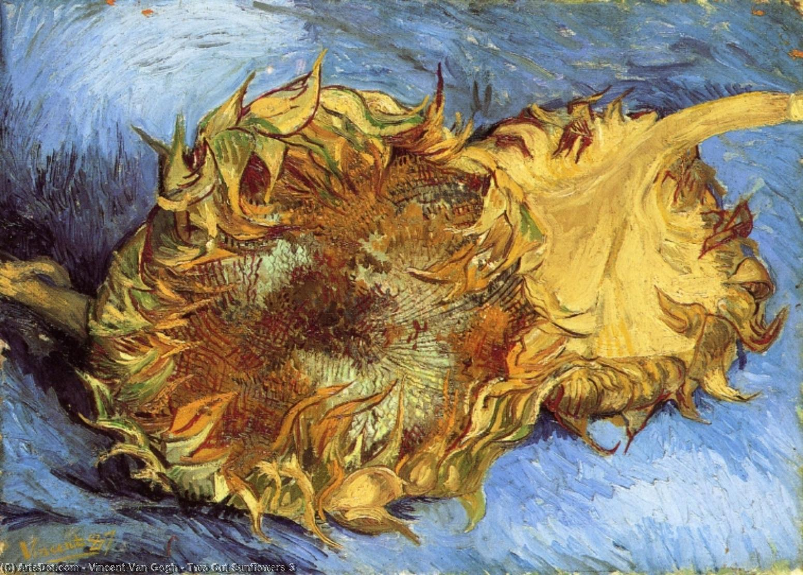
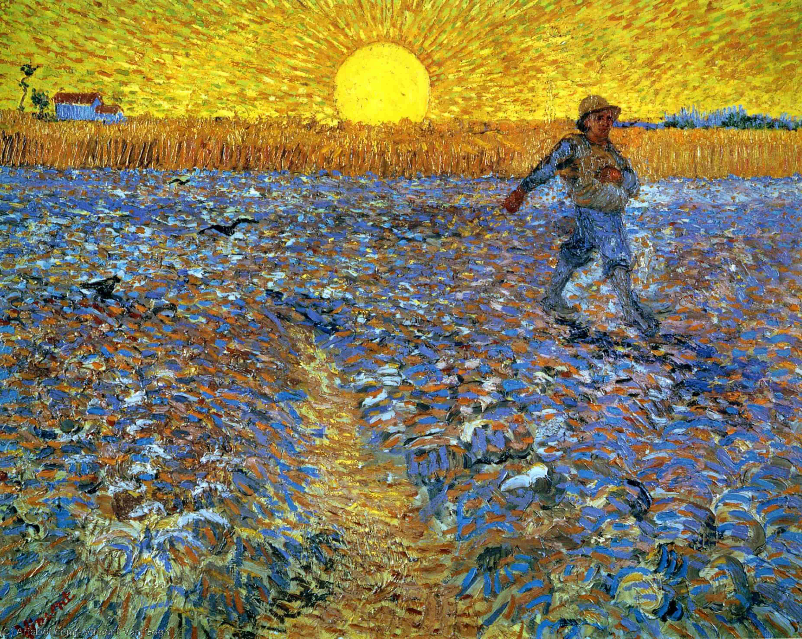

Vincent van Gogh (1853-1890) fue un pintor postimpresionista holandés que ha sido uno de los artistas más influyentes de
la historia del arte.
Van Gogh nació en los Países Bajos en una familia de clase media. Comenzó a trabajar en una galería de arte a los 16
años y se interesó por la pintura. Sin embargo, Van Gogh no comenzó a pintar seriamente hasta unos años después. Después
de trabajar en varias galerías de arte y mudarse a Inglaterra y Francia, decidió dedicarse por completo a la pintura a
los 27 años.
Van Gogh fue un pintor muy productivo, creando más de 2,000 obras en su corta carrera de 10 años. A pesar de su talento, Van Gogh no tuvo éxito comercial en vida y sólo vendió un puñado de pinturas. También sufrió de problemas mentales y fue hospitalizado varias veces. Van Gogh es conocido por su estilo expresivo y su uso del color. Sus pinturas son famosas por sus vibrantes pinceladas y por la forma en que capturan la luz y el movimiento.



PRUEBA A DESLIZAR LA IMAGEN
Uno de los temas favoritos de Van Gogh eran los paisajes, especialmente los de su hogar adoptivo en Francia. También
pintó una serie de retratos, bodegones y naturalezas muertas. Algunas de las obras más famosas de Van Gogh incluyen "Los
girasoles", "Noche estrellada" y "Autorretrato con la oreja vendada".
Van Gogh es a menudo visto como un artista solitario, pero tuvo una estrecha amistad con el también pintor Paul Gauguin.
Los dos vivieron juntos en Arles, Francia, durante un breve período, pero su amistad se deterioró y terminó en un
altercado en el que Van Gogh cortó su propia oreja. Van Gogh se suicidó a los 37 años y fue enterrado en un pequeño
pueblo de Francia. Sin embargo, su obra y legado han continuado creciendo en popularidad y reconocimiento a lo largo del
tiempo, y hoy en día es considerado uno de los artistas más importantes e influyentes de la historia del arte.